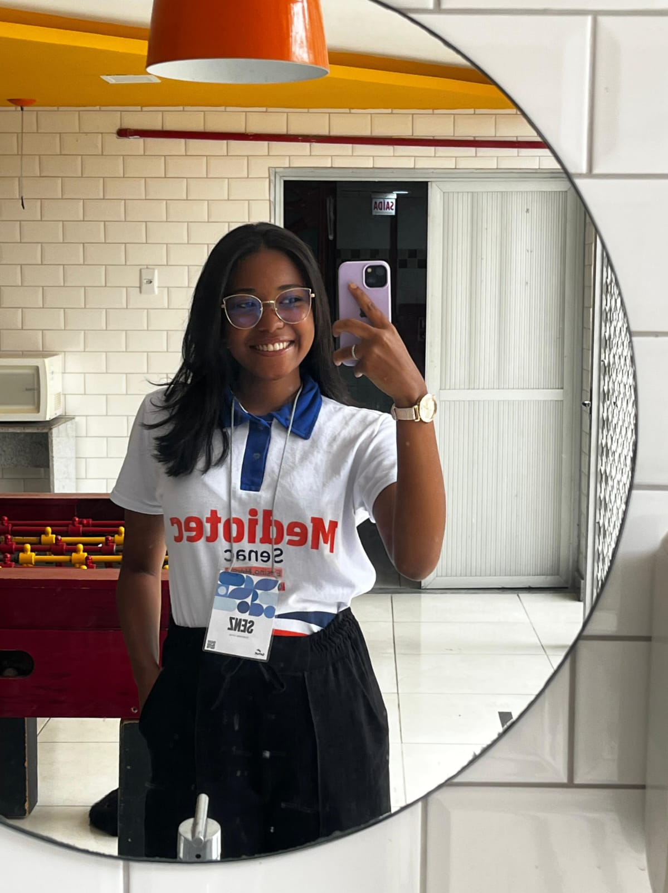

Sou desenvolvedora de software apaixonada por tecnologia e pela criação de soluções digitais que unem funcionalidade, organização e design. Tenho interesse em áreas como gestão, governança e documentação de sistemas e em front-end, UI/UX, buscando criar interfaces modernas, intuitivas e bem estruturadas. Estou em constante aprendizado, explorando novas ferramentas e formas de otimizar processos para transformar ideias em soluções eficientes e organizadas.